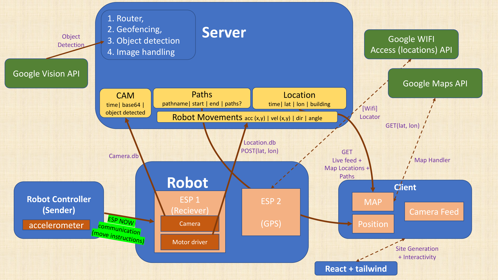
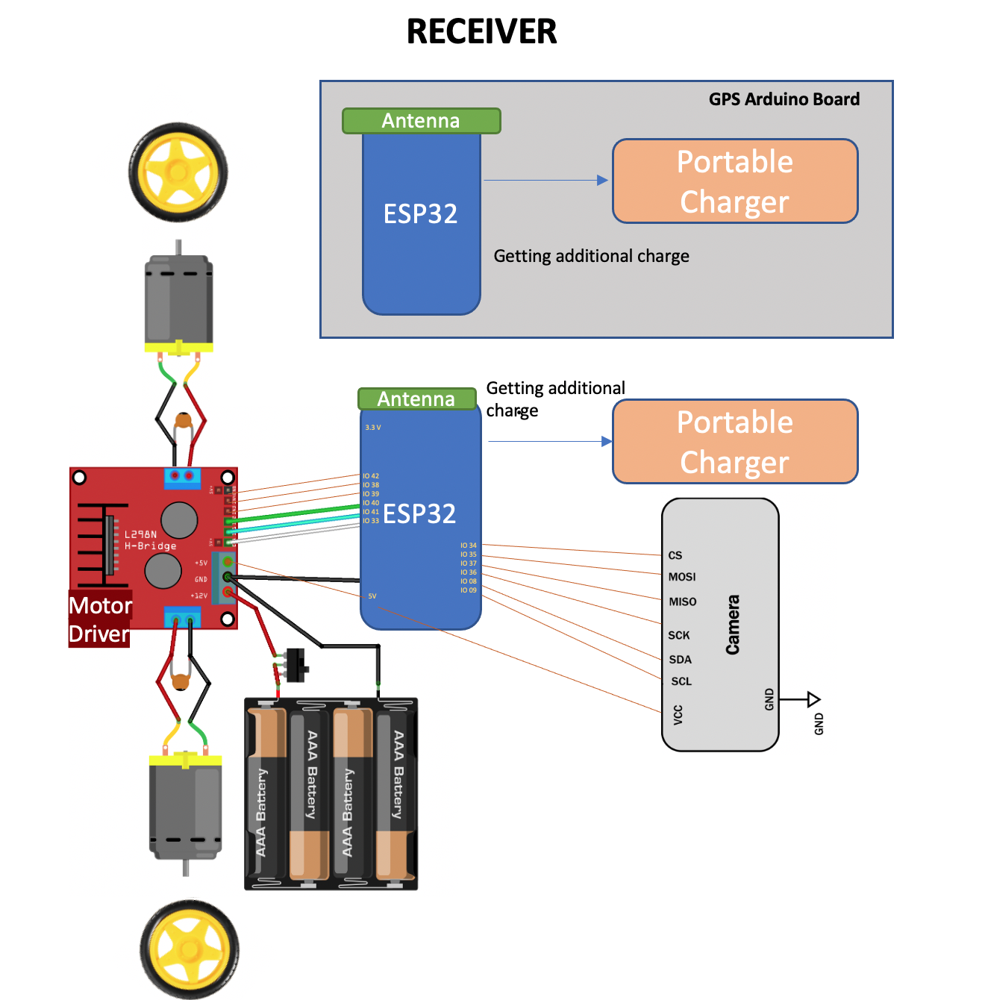
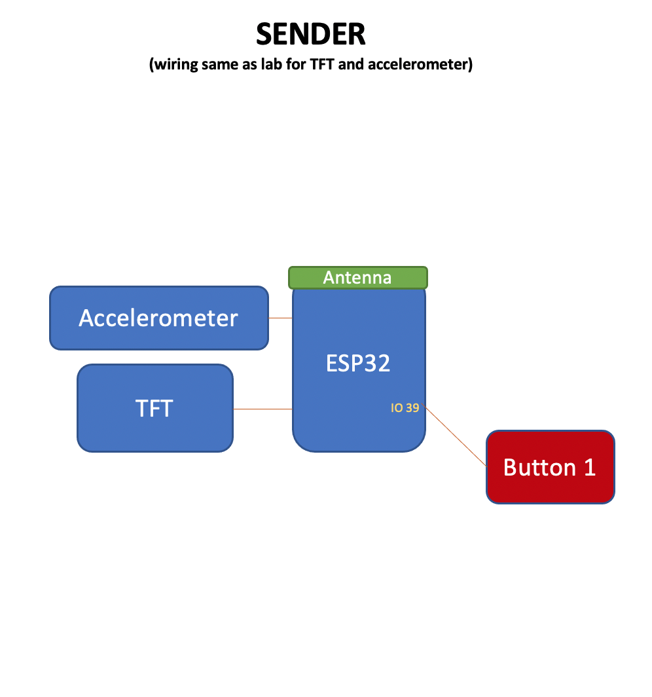

Robo Mapped
TODO. We will have a video here soon.High Level Overview
Our goal with this project has been to create a remote control system to remotely explore different areas of campus. This system mainly involves a tilt-based controller built using an Arduino in addition to a wheeled robot, which can move forwards or backwards or turn left or right based on the tilt of the controller. The robot can also collect information about the world around it, including camera images, location data, and rudimentary object detection for potential future autonomy. We have of course also included an intuitive GUI web-client to display much of this data for the purposes of tracking the robot's locomotive/kinematic history as well as its current state.
We envision that our system could be applied to explore dangerous or hard-to-reach areas, though in the interests of completing a satisfactory integration for the class, we made choices which constrain the areas where our robot is effective, such as using the Wifi-Scan Google API from lab to locate the robot.
Documentation
Components
- Robot (Driver/Sensor and Wifi-scanner/Locator)
- Controller
- Web Application
Functionality
Functionality for our system is fairly intuitive and simple. Users press the start button (button 1) on the controller to begin moving the the robot. They then tilt forwards to move the robot forwards, backwards to move backwards, and to either side to move only one wheel (spinning the robot). "Forwards" for the robot always means with respect to its own direction and not that of the person controlling it (who may or may not be in another room, using the camera feed to guide movement). The user can disable movement by clicking button 1 again. They can open up our website to run the web client to see the camera feed from the robot (at a rather slow framerate). On that same website, they can use the top menu bar to select whether to switch to a historical map of the robot's trajectory or to save a set of times representing the start and end date/times of a path that is being recorded.
Start Robot Path
We have an SQLite server on back-end that is updated on a consistent basis by the the robot. Every couple milliseconds, the controller-robot system adds the latest kinematic data to the database, while the every few seconds the robot performs a wifi scan to update the database with the latest location data using a Google API.
Tilt control- speeds and direction
We use a linearly interpolated and binned tilt-based controller. We began by modifying the ball simulation lab code to not use a simulation, but instead to simply send its tilt information to another Arduino using a the ESP Now module. We were able to use a simple Arduino ""script" sketch to display the unchanging MAC address of the the robot's ESP32S2 Arduino, which enabled us to use the ESP Now to send tilt information every 80 ms. We chose this number because from experiment we found it to be responsive enough for a user to intuitively control the robot, and slow enough to avoid clogging up bandwidth (which we also need for other features, like locating the robot).
View Camera feed on Server
We set up an Arducam on the robot to take small pictures of the space facing in front of they robot every couple seconds. These are streamed up to the web server as base64 which then is stored in a camera database, also in SQLite. Fortunately, our photos are small enough to fit.
View robot paths on server (start a new path)
We have a database that stores the robot's locations as latitude and longitude plus an MIT building (or "off campus"), the former being similar to the lab. We have a few endpoints for this information. One returns a table of the locations the robot visited over time in sequence, just like in the lab. Another, returns a Google Maps map with waypoints where the robot visited connected by polylines to provide a more intuitive and aesthetic interface. These are reachable from our home page, which is served by the 608 server. We also have a basic front end for starting and stopping (named) path recordings to save specific paths that may be of interest (for example pertaining to different users).
Auto Mode: object detection with camera feed
The robot is able to detect whether objects are close to it, right in front. This data is meant mainly as an exploration of what the robot will need in the future to be fully autonomous.
System Diagram

System Layout
The physical system, barring the infrastructure for the server, is broken up into three pieces: the controller, the robot's driver and sensor module, and the robot's wifi-scanning locator module. The robot's two modules are taped to the same chasis as if they were one. The robot has two modules because we needed parallel Wifi-scanning due to it being slow and blocking ESP Now communication. We tried GPS and dual-core parallelism but it was insufficient. More details on this will be available further below.
The robot's Wifi-Scanning Module
The wifi scanning module is basically the same as that from the localization lab. We simply removed all other unecessary components. It has an Wifi-enabled ESP32 connected to power and ground contacting our API endpoints on a consistent basis.
The robot's Driver Module
The robot's driver module is altogether different from anything in any lab. It is connected to a pair of motors which are connected to wheels, all on a chasis which also holds two battery packs: one for the the motors and one for the Arduino. We have a motor driver to control the motors and an Arducam to take photos.
Controller
The controller is similar to the ball-sim lab but with all unecessary components removed. It has a couple buttons (though it only needs one) to enable or disable remote control. On top of this it has an IMU and an ESP32 with ESP Now enabled.
Hardware Layout
The Robot (ESP Now Reciever)

Controller

Parts List
- Hobbyist Motors (from TA)
- Hobbyist Wheels (from TA)
- Hobbyist Chasis (from TA)
- AA Battery Pack (from TA)
- 4x AA 1.5V Batteries
- Dual Core ESP32S2 Arduino (3x)
- Camera (ArduCam)
- Sonar (HCSR04, used for aesthetics)
- 5v Battery Packs (2x)
- L298 Motor Driver
- IMU (MPU 6050)
- USB and jumper cables
- Button (From Lab)
Total Parts Price
Around $63.31 excluding hardware from class and the motors, wheels, chasis, and AA battery pack, which our TA, Amadou, was generously able to lend us for the duration of this project.
Other Components
- Server (software)
- ESP Now (built-in to the ESP32S2 Arduino)
- Dual Core Chip (built-in to the ESP32S2 Arduino)
Design Challenges and Decisions
We faced various challenges throughout the design and implementation process. Many of them we were forced to simply work around. They mainly included, but were not limited those below.
Implementation Challenges
GPS not working. We had troubles setting up our GPS. We followed the guide posted on the 6.08 class site, but its pins were outdated. After discussing with a TA, we were able to find the right pins, but even then it would not display anything. We tried all permutations of wiring for our GPS module, but were unable to fetch location information even with it flashing as if it were functional. For that reason we abandoned GPS in favor of wifi-scanning.
Wifi-scanning and requests latency; dual-core parallelism bugs with the Wifi Module. Wifi-scanning from the lab was too slow for our needs, since it blocked the robot from acting on controller requests to change speed. For this reason we first tried using the dual-core functionality of the ESP32S2 Arduino, but it introduced parallelism bugs sporadically and unpredictably when the Wifi module did a scan to update its information regarding nearby access points (to query Google's API with). This forced us to simply use a third Arduino for our location data collection.
Serving a react-based web client on the server. Our goal was to create a reactive web-client for our application so that we could enable real-time data and control of the robot. However, we had to create a client-server system that would be compatible with the 6.08 server, which has certain limitations in which content type it can serve. We initially tried to use an HTML file and inject Javascript with our main app React code, but we realized that we had to provide access to other Javascript files to support React functionality such as state management and styling. Our next attempt involved using "bundle" commands in order to bundle all our React files into one file that could be server on the server. This did not work either, so we decided to look into features that React provides for this purpose. In doing that, we learned that React "build" packages the app in a single file and provides a PUBLIC_URL to access it at. With this, we were able to access the public build from the 6.08 server, and serve our entire app, including different routes, files, and packages.
Storage space for camera data both on on-board buffers and in the server. Most image sizes were too big, especially in base64, to store on the Arduino and send to the server in one request. We also worried at first that these images would not fit into our database. Fortunately, this was not the case and we were able to do both of these things by picking the smallest possible image size, 160x120.
Lack of power for a sensor-laden robot. We were unable to do an end to end test until week 3 of the project because the robot had too many sensors to power them all in addition to the motors, even when given 6V from the battery pack through the motor driver. Luckily, our order of 5V USB power supplies arrived in time for us to power the Arduino independently with a power supply and thereby make our robot autonomous (disconnecting it from the computer) and able to power its sensors.
Arducam debugging. We first tested the camera with the example script. Then we base64 encoded the image and sent a post request to the server. There were quite a few issues we faced including running out of buffer size so we tried PSram but our Arduino didn’t have the Wrover ESP32 chip so we ended up reducing the resolution to 160x120 which is sufficient for future object detection. Then on the server side, we created a new database that stores 1 entry of the timestamp and base 64 encoding of the image. We also decoded the base 64 encoding and saved the image as a jpg which initially would get overwritten to avoid database space constraints, but eventually we were able to save multiple images.
JPEG HTML embedding. We encountered challenges in serving images on our front-end from the database, which
were even harder to tackle because of the variety of software and hardware components involved in this feature.
We initially confirmed that the Arduino camera was properly taking images by decoding the base64 image strings
on our local computers and successfully viewing the images. However, our HTML server would attempt to decode
the same image strings and would not render a valid image. We debugged this by using our browser console and
adapting the image data source component to include or exclude different sections, such as content-type specifications
and other attributes. We started to clip certain parts of the base64 data string itself, since we noticed it had
extraneous characters at the beginning or end. We eventually found that our hardware code was storing image data strings
with padding characters at the end, separated by a "=" symbol from the rest of the valid base64 characters. For some
reason, our local file server was able to parse these anyways, but our HTML server would not render the image with this
suffix. Finally, we implemented parsing code to make sure the front-end server is receiving valid base64 image
source strings from the database.
Low Camera Framerate. Because it took the Arduino a lot of work to take the pictures, encode them in base64, send them to the server, await an OK as the server input them into the database, and so forth, the frame rate for our camera is very low. It is enough for real-time control in static settings, but not viable for dynamic settings (i.e. with many moving objects). The TAs told us that this was as good as we were gonna get from the Arducam with the ESP32, but we imagine that with better hardware and some performance optimization (and streaming) it would be possible to have a more real-time feed.
Object detection model and API use. We went about a few methods for object detection. One was creating our own model, which worked, but since we couldn’t download tensorflow on the server we restarted and instead used a google vision API from the server. We went through a number of authentication issues with private keys etc. but ultimately were able to compute the object closest to the camera and its coordinates and save this object in the database. It is also sent to the TFT of the sender so the sender can now decide whether they want to look at the camera or just their TFT screen when controlling the robot. As a simple add-on this would enable us to stop the car if a person is detected in sight (to create an “auto-mode”).
Speed data collection. Since to get real time data, we ran the speed collection loop in parallel (on one of the two cores) to all server requests, we ran into some parallelism issues that caused the Arduino to intermittently crash for unknown reasons. We had to temporarily disable wifi scanning on the ESP, until we moved wifi scanning only to the robot.
Path data sending. The challenges for this aspect included working with large amounts of data to understand the format it was coming in, such as through well placed console.log messages or using API tools to check the output of API endpoints. It also included trying out different intervals of data retrieval that would be reasonable yet not slow down the UI significantly.
Design Decisions
Map front-end path rendering. We used google map's API to show a "polyline" in between each pair of adjacent points. We also refactored the code in order to properly refresh and load the coordinates. Before, the webapp was pushing all new points into an array constantly, which made the webapp very slow. Now, we have a separate async function that gets the data from the API, reformats it into the right format (array of coordinates rather than dictionary of array of lat, array of lng, etc.) and sends the full updated data to the server. This also allows us to only send the most recent set of coordinates into the UI component.
Robot movement control. After some exploration and risk assessment, we decided to proceed with tilt control rather than gesture control since gesture control brings about challenges such as reliable detection of relative movement and individual, independent motions. Tilt control would be more feasible and reasonable with the scope of our project, and had proven to be robust and reliable with our other class projects.
Location detection. Our implementation challenges are what led us to choose wifi-scanning over GPS as our localization technique. We understand that requiring Wifi is potentially not ideal for the sort of hypothetical scenarios in which a robot like this would be useful, but understand that to create our MVP it was necessary to use the tools at our disposal. We decided that instead of using the GPS module, we were going to run 2 ESPs in parallel on the robot to load balance the work between, one one hand, locomotion and sensors, and on the other, wifi scanning and certain HTTP/HTTPS requests (the latter of which are very slow, and blocking). We'd also tried to use the dual core for this purpose initially, but it led to parallelism bugs likely due to shared resources (we got Guru meditation errors sporadically for illegal writes to, supposedly, shared memory). Using 2 ESPs solved our problems, so we settled with that strategy.
Path photo history. In order to correlate images with locations along a path, we designed an API endpoint that returns an array of images from the database and also the information about where and when the image was taken. It does this by querying the location database with a certain time range based on the image datetime for each image. The main challenge was developing an efficient design for this and deciding to minimize the location data we query for on each database query by looping through just the images we need.
UI design decisions. We also developed a front-end function that returns multiple images from an API endpoint, and further learned how to enable seamless array data transfer from the server.py file to a front-end JavaScript file with JSON parsing, allowing it to render continuously and with negligible delay.
Showing path history. We store a path using the start and end timestamps for that path, and had to decide how to display this data. We created a simple frontend in react that is a static table which you interact with using url parameters, for flexibility and easy access. We decided to limit the table to 20 entries for readability, and it only shows times after the start time and before the end time.
Binned speeds. Inspired by the napster lab, we binned the speeds of the robot. We added minimum tilts in each axis necessary to enable movement and then broke up the speeds into quartiles. This would allow our robot to move at different speeds. We used a linear interpolation/mapping from the space of tilts to the space of speeds (with clipping for a max tilt of around 1G at 180 degrees and min tilt of that but negative). In the process of doing this, to get real time data, we also ran the loop in parallel (on one of the two cores) to all server requests because otherwise they would block and ruin the user experience. We were able to combine the binned-speed controller plus the robot by using the battery pack for the controller.
Detailed Code Layout
Server
Our server code is seperated into two modules, called Crud and Webpage, which respectively handle API endpoints
to read/write from/to the databases/state and a simple webpage server. We have a request handler which based on the URL
arguments passed is able to route the request to either Crud or the Webpage's handlers.
The Crud endpoints modify three databases: one for camera data, one for location data, and one for kinematic data. We have split it up this way because the modules handling the sending of these different types of data have different frequencies at which they send their data. The Crud object implements entirely static methods which are typically wrapped in a python SQLite connection and cursor decorator to modify the correct database. Using decorators like this along with the static objects was able to make our code a lot cleaner and easier to work with. Below is an example Code snippets to give you a sense of what modifiying our databases looks like.
class Crud(object):
LOC_FILE = "/var/jail/home/team10/loc.db"
...
def withConnLocCursor(func: Callable[[sqlite3.Cursor, sqlite3.Connection, Any], str]) -> str:
""" Wrap your functions in this when you want them to have access to the database"""
def wrapper(*args, **kwargs):
conn = sqlite3.connect(Crud.LOC_FILE)
c = conn.cursor()
result = func(c, conn, *args, **kwargs)
conn.commit()
conn.close()
return result
return wrapper
...
@withConnLocCursor
def handle_whereami(c: sqlite3.Cursor, conn: sqlite3.Connection, request: Any) -> str:
if not "x" in request["values"] or not "y" in request["values"]:
return "Error: please provide x and y"
x_str: str = request["values"]["x"]
y_str: str = request["values"]["y"]
try:
x: float = float(x_str)
y: float = float(y_str)
loc: str = GeoFencer.get_area((x, y))
now = datetime.now()
# post to database
c.execute("""CREATE TABLE IF NOT EXISTS loc_data (time_ timestamp, x_x real, y_y real, build text);""")
c.execute('''INSERT into loc_data VALUES (?,?,?,?);''', (now, x,y,loc))
return loc
except Exception as e:
return f"Error: please provide x and y as floats, had error: {e}"
...
The following endpoints are available for Crud:
| Endpoint and Type | URL Query String | Description |
|---|---|---|
| Kinematic and Location API GET | Any Value other than "camera," "monalisa," "whereami," or "Wherehaveibeen" | Get a list of historial location and kinematic data of the robot. |
| Kinematic and Location API POST | None | Post a new entry of location and kinematic data. |
| Whereami (GET) | ?whereami=1 | Find out where a latitude and longitude are at MIT. |
| Wherehaveibeen (GET) | ?wherehaveibeen=1 | Get a static HTML table of where the robot has been. |
| Camera POST | ?camera=1 | Post a picture to the camera database. |
| Camera GET | ?camera=1 | Get an HTML page with a picture from the latest camera feed. |
| Camera All GET | ?allcamera=1 | Get an serialized sequence of images in base64. |
The webpage only has one single meaningful endpoint to return the string representing the index.html of our
webpage. We also have a dummy "mona lisa" endpoint accessible with ?monalisa=1 as a sample of HTML base64 embedding of
images. Note that we had to put the wherehaveibeen endpoint in Crud and not Webpage because it requires reading from the
database directly. We implemented it as a low-level, simple MVP for localization early on, before we had map
waypoints.
Lastly, we have a GeoFencer object which encapsulates the functionality from the GeoFencing lab and allows us to locate the robot on MIT.
Database Layout
Location Database with Example
| "time_" Time (timestamp) | "x_x" Latitude (real) | "y_y" Longitude (real) | "build" Building (text) |
|---|---|---|---|
| 2022-05-08 08:15:27.243860 | 42.360226 | -71.094139 | Student Center |
Camera Database with Example
| "time_" Time (timestamp) | "image" Image Base64 (text) | "response" Object Detection Class (text) |
|---|---|---|
| 2022-05-08 08:15:27.243860 | /9j/... | person |
Kinematics Database with Example
| "time_" Time (timestamp) | "a_x" Tilt x (real) | "a_y" Tilt y (real) | "v_x" Deprecated (real) | "v_y" Deprecated (real) | "speed" Speed (real) | "direction" Direction (real) |
|---|---|---|---|---|---|---|
| 2022-05-08 08:15:27.243860 | 0.534 | -0.02 | 0 | 0 | 75 | "1 |
Web Client
React
We were able to use ReactJS with Typescript to create an aesthetic and reactive experience for the users of our webpage. Our main components are a map, a plotter of tilt and kinematic data, and a camera handler that shows a historical, real-time view of the camera feed from the robot. The map communicates with a Google API for maps to enable us to place pins and create paths, which helps visualize what the robot does.
The other major advantage of React is that enables us to do single-page routing. This is ideal for us because deployment on the python server (which is not meant to serve multipage applications) was non-trivial, and thus having a stateful single-page application handles these engineering challenges on the client side more easily.
Layout Handling
We used Tailwind CSS to generate utility classes which handle all of the styling on the webpages. Tailwind CSS is unique in that it helped with tricky layout handling for the canvas, especially the Google API map.
Deployment
The main insight for deploying reactive applications using a build tool like webpack from the 6.08 server is that you need to staticaly bundle everything somewhere where it can be reached, an then you need to change the paths in your javascript file to include the full path on the 6.08 server. We were able to do this by changing environment variables in a secrets file during build time. Changing the secrets file on the server itself is also important because if students are using an API key like we were for the Google Map, then it is important that they avoid writing it in their javascript file due to security concerns. This is not obvious to someone new to web development, but it is important to understand.
Challenges
We wish we'd had Git or in general version control already built-in to the server so that we could collaborate more easily there. This is meaningful because we needed to test both our front-end and back-end in real time to debug and we ran into issues due to people pushing things to production randomly for the purposes of testing.
Another major challenge was synchronizing the location stream and the images from the database without taking too long and blocking on the client. We were able to surmount this by lowering the frequency of updates on the client, which fortunately was not perceptibly slower (due to the camera being, in itself, slow).
Lastly, we had to work around bugs involving react's native BrowserRouter, because we couldn't use paths ont the client. Instead, we used a state machine (similar to those we've seen throughout the class) to select which page to show. Each page has a state (roughly) and each state transitions to each other using a button in the header of our web client. We conditionally render based on the state.
ESP32 Controller (Sender)
Sender.ino: /arduino/sender/sender.inohe ESP32S2 controller is fortunately one of the simpler Arduino implementations in our project. Initially it was doing all the localization work because our Robot did not have enough power to use Wifi, but once we were able to shift that to be on-board in the robot, we were able to just handle ESP Now messaging. Every 80ms, our code simply gets the tilt (corresponding to speed), processes it, then sends it to the robot (with some additional data like direction, angle, and so forth, though we only support the four main directions, forward, backwards, left and right, denoted by UP = 1, DOWN = 2, LEFT = 3, RIGHT = 4, for the purpose of keeping a de-noised experience; we also have NONE signifying not moving).
The OnDataSent function is a callback which ESP Now calls when it successfully sends a message. It is used to
inform
the user through the Serial console (if present) that data was successfully sent (which is important for debugging),
but
is otherwise not that important. The functions get_direction, get_speed, and get_angle turn tilt data into a
direction and a speed for that direction. As previously mentioned there are four directions for the four rays coming
out
of the origin of the two axes on the 2D plane corresponding to the birds-eye view of the ground. We also have a
functionality to print these kinematics data to the TFT so the user can know how they are conrolling the robot (for
example if it's far away).
We bin our speeds into 4 bins based on a linear mapping from the range of tilts (between 0 and 1G) and the range of speeds (between 0 and 100 in a unit pre-determined by our motor driver). This is similar to the work done in the Napster lab for the notes, except the function is in fact purely linear.
ESP32 Robot (Driver and Sensor)
Receiver_w_cam.inoThis file includes both camera detection and posting as well as receiver code for esp now communication and converting speed and direction to robot instructions with move_car. For camera detection we set resolution to 160x120 to not overflow space and base64 encoded each frame before posting to the camera database. Additional parsing was done on the server. The file also included esp now code through OnDataRecv to receive the x,y tilt info and associated stats present in the info variables for direction and speed (which are needed later for moveCar.)
Support functions: /arduino/receiver_w_cam/camera_support.h. These include primarily base64 encoder functions.
Bonus: TinyML
We explored a few different methods of object detection since we wanted to first create something that was more customizable rather than using an API so we tried tinyML. TinyML uses the "Eloquent TinyML" library on the Arduino to do basic detection of objects and other such machine learning tasks. We used their implementation to create our working object detection. However, we ended up shifting to an API because it was too hardware intensive to run on the edge.
ESP32 Robot (Wifi-Scanner/Locator)
The Wifi-scanner code is similar to the lab. It simply runs on a loop to scan wifi networks, build the query JSON,
and
then send it to the Google API at https://www.googleapis.com/geolocation/v1/geolocate with the key provided to us
in
one of the labs. Once it is done with this, it sends a request to our backend to update our locations database.
Milestone Videos
Week 1
ESP Now
Short is available here. For some reason Youtube kept insisting that we make this a short.
Database
Short is available here. For some reason Youtube kept insisting that we make this a short.
(Development) Website
Short is available here. For some reason Youtube kept insisting that we make this a short.
Typescript and Better Plotting
Week 2
(Production) Website
Locating App in MIT using Wifi and Google API
Path on Webserver
Moving Robot's Wheels (Non-Autonomous)
This got like 400 views on Youtube.
Week 3
Binned Speeds
Moving The robot (Autonomous)
React Router and Porting to React
Camera Feed On Website
Week 4
Robot Localization (from Robot) using GPS or Alternative Method
You can find our short here.
Dynamic Camera Feed
We have a dynamic camera feed available in the website we made. It is created by doing a, metaphorically speaking, inner join between the camera and location data.
We also have the integrated behavior here:
Paths Travelled on Database
Object Detection and Display
End to End Integration: Using The Robot
TODO. This will come soon.
Historical Notes
We initially thought of making a mostly web-based project involving a swiping mechanic to catch turtles on a web client by moving the arduino (sort of like nintendo kinect). The design of that idea is fleshed out in the project proposal we submitted 4 weeks ago. However, Joe and the TAs dissuaded us from pursuing such an idea because doing localization of the Arduino in 3D space using an IMU is an unsolved problem and beyond our scope. This is why we opted to instead do tilt control for our robot. Few of us have Robotics experience and we thought this would be an exciting and fruitful way to learn about it. Fortunately, despite many challenges, we have found it to be so.
Team Members
- Natasha Maniar
- Adriano Hernandez
- Sualeh Asif
- Daniela Velez